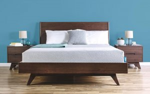

Herzlich willkommen bei Robert's Matratzen. Seit vier Jahrzehnten sorgen wir mit unseren handgemachten Qualitätsmatratzen für den gesunden Schlaf, den Sie verdienen. Dank besten Produktionsstandards in unseren Manufakturen in Portugal garantieren wir ihnen die beste Qualität. Wir sind von der Langlebigkeit unserer Produkte so überzeugt, dass wir Ihnen auf jede Matratze 50 Jahre Garantie geben.
